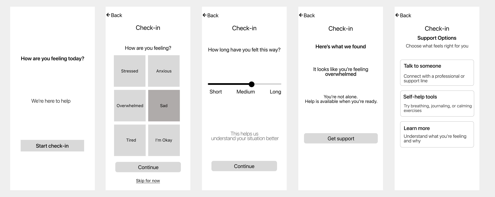

Mobile UX · Mental Health
A guided emotional check-in experience that helps users reflect on how they feel and access support — without feeling overwhelmed.
The Problem
Many mental health apps greet users with too many choices exactly when they're most vulnerable. The cognitive load of navigating complex menus during emotional distress creates friction that prevents people from getting help.
The Goal
Design a structured, step-by-step emotional check-in that removes decision fatigue, uses supportive language, and leads users naturally toward the right action based on how they actually feel.
The Product
MindCare transforms emotional reflection into a simple, structured flow. Instead of options and menus, users follow a guided journey — one step at a time — toward clarity and the right kind of support.
Every interaction was designed around the tap gesture. Clear hit targets, visible state changes on selection, and immediate feedback ensure users feel in control without hovering or reading fine print. The experience was built for distressed users, not ideal-state users.
Copy was treated with the same care as layout. Every label, prompt, and support message was written to be calm, non-judgmental, and encouraging — meeting users where they are without projecting emotions onto them or adding pressure to respond in a certain way.
The experience is a linear guided flow — not a dashboard or navigation tree. Each step builds on the previous one. By restricting choices at each stage, the design reduces cognitive overload and gives users a clear sense of progress and direction.
When presenting support options, MindCare surfaces a recommended action based on the user's check-in responses. This removes the burden of choosing and makes the final step feel intuitive — a natural conclusion rather than another decision point.
Low-fidelity wireframes were used to establish the full check-in flow and validate the structure before adding visual treatment. The focus was on step clarity, emotional pacing, and ensuring users always knew what came next.

Five screens carry the user from emotional entry to a clear, personalised support recommendation.


Every interaction is immediate and visible. Users tap to select, see instant state changes, and always know which option is active — no ambiguity, no second-guessing.

The system reflects the user's input with calm, personalised language — then surfaces a recommended support path that makes the final action feel effortless.
Designed entirely for touch with no reliance on hover states. Large, forgiving tap targets and clear active states ensure confidence with every interaction.
Selected states are visually unambiguous. Users receive immediate feedback on every tap, reinforcing the sense of control and reducing the urge to second-guess.
A linear, guided flow removes the cognitive load of navigation. Users are never presented with more than one decision at a time — progress is always clear.
Every word was chosen to feel calm and non-judgmental. The copy meets users without projecting emotions or adding pressure to respond in any particular way.
Support options surface a recommended path based on user input, reducing decision fatigue at the most critical moment and making the final action feel like a natural conclusion.
The interface deliberately withholds complexity until it is needed. Screens are sparse by design — every element present earns its place by serving the user's immediate need.
The final experience reduces cognitive load and helps users take meaningful action faster during moments of emotional distress. By guiding rather than presenting, the design creates a calmer, more supportive journey — one that respects the user's state and removes barriers between reflection and help.
Available for new work
Open to freelance projects, collaborations, and contracts. Get in touch and I'll get back within 48 hours.
Or reach out directly
chimaconfidence086@gmail.com